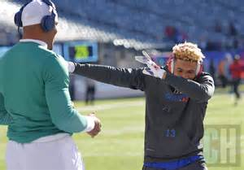
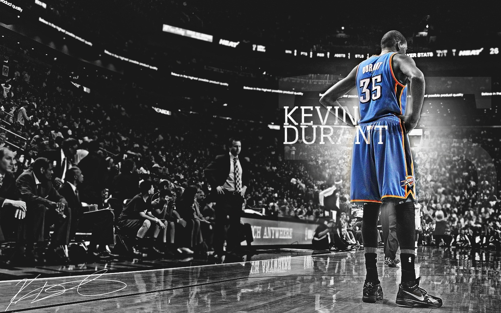
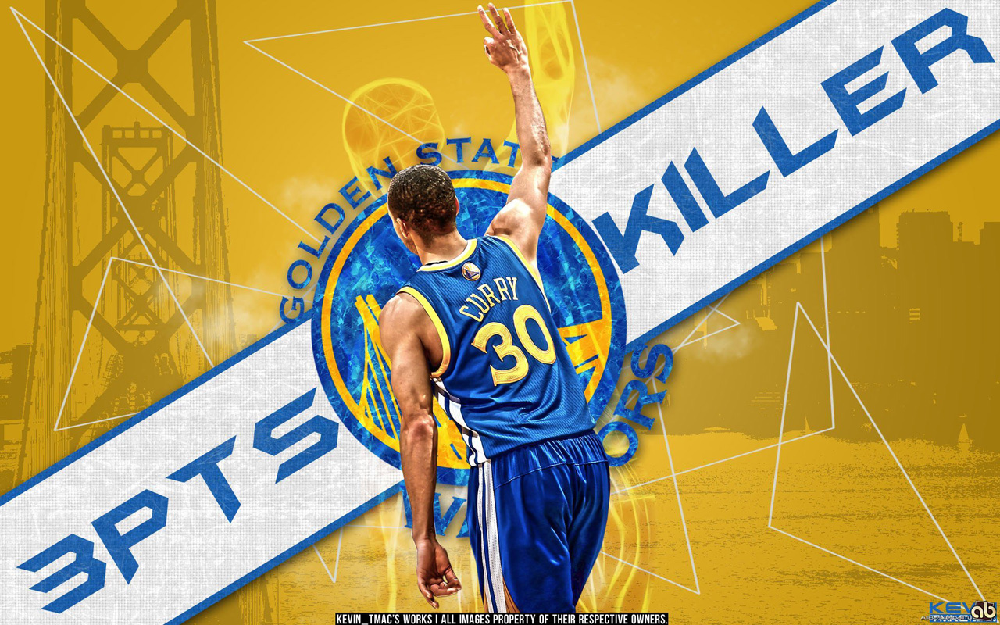
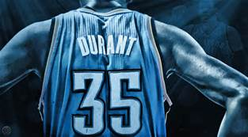
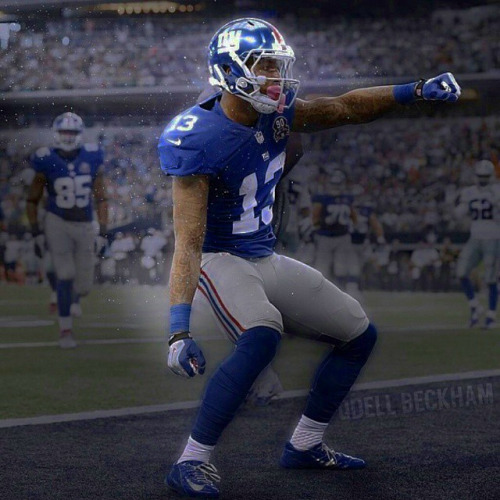

Presidental Candidate
james was here
We’ve crafted some handsome templates for you to use. Go ahead and click 'Continue to layouts' to browse through them. You can easily go back to edit your page before publishing. After publishing your page, you can revisit the page generator and switch to another theme. Your Page content will be preserved.
Creating pages manually
If you prefer not to go to a goldenstate game i will give you free tickets to the panthers foot ball or the new york giants  Authors and Contributors =Support or Contact
vote for me and you will get free back stage to meet steph curry and free tickets